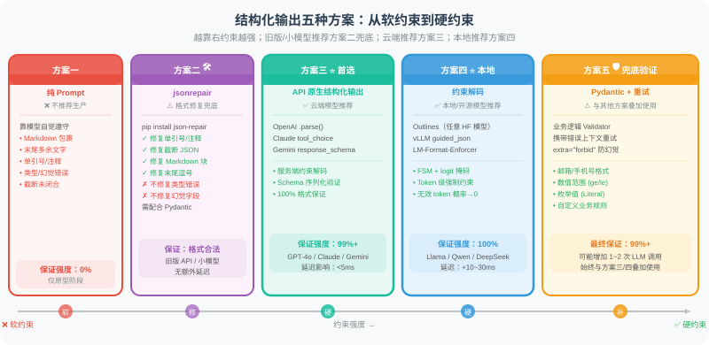

9.6 结构化输出：保障 JSON 可靠性的工程实践
🔩 "Agent 输出一个无法解析的 JSON，下游整个流水线就崩了。这不是模型问题——这是你的 Harness 没做好。"
为什么 JSON 可靠性是 Harness 问题？
在 Agent 系统中，JSON 是模块间通信的通用语言：工具调用的参数、结构化分析结果、多 Agent 消息传递……无处不在。
但模型并不"天然"保证输出合法 JSON。即便你在 Prompt 里写了 请输出 JSON，生产环境中仍会遇到：
# 模型实际输出的各种"意外"
✗ 有 Markdown 包裹：```json { "key": "value" } ```
✗ 末尾多余文字：{"key": "value"} 以上是分析结果
✗ 单引号代替双引号：{'key': 'value'}
✗ 注释（JSON 不支持）：{"key": "value" // 这是注释}
✗ 数值字段输出字符串：{"count": "3"} 而非 {"count": 3}
✗ 幻觉字段：模型加了 Schema 中不存在的字段
✗ 截断输出：上下文不足时输出被截断，JSON 未闭合
每一种情况都会让 json.loads() 抛出异常，进而触发下游连锁故障。
从 Harness 视角看，这是支柱二（架构约束）的核心应用场景：不能依赖"模型会自律地输出正确 JSON"，而要用工程机制强制保证输出格式。
五种方案的演进路径
软约束（不推荐） 后处理修复 硬约束（推荐）
──────────────────────────────────────────────────────────────────
Prompt 说"请输出JSON" → jsonrepair → API 结构化输出 → 约束解码
（容错兜底） （服务端强制） （Token级强制）
下图展示了五种方案的技术路线和适用场景：

方案一：纯 Prompt 约束（软约束，不推荐）
# ❌ 反例：仅靠 Prompt 约束
system_prompt = """
你是一个数据提取助手。请将用户输入解析为以下 JSON 格式：
{
"name": "姓名",
"age": 年龄（数字）,
"email": "邮箱"
}
请确保输出有效的 JSON，不要加任何其他内容。
"""
# 问题：
# 1. 模型可能在 JSON 外加说明文字
# 2. 复杂 Schema 下字段类型错误率高
# 3. 无法处理嵌套结构中的幻觉字段
# 4. 模型不同版本/温度下表现不一致
# 如果一定要用，至少加后处理：
import json, re
def extract_json_from_text(text: str) -> dict:
"""
从模型输出中尽力提取 JSON（最后防线，不应依赖此法）
按优先级尝试多种解析策略
"""
# 策略1：直接解析
try:
return json.loads(text.strip())
except json.JSONDecodeError:
pass
# 策略2：提取 ```json ... ``` 代码块
md_match = re.search(r'```(?:json)?\s*(\{.*?\})\s*```', text, re.DOTALL)
if md_match:
try:
return json.loads(md_match.group(1))
except json.JSONDecodeError:
pass
# 策略3：提取第一个 { ... } 块
brace_match = re.search(r'\{[^{}]*(?:\{[^{}]*\}[^{}]*)?\}', text, re.DOTALL)
if brace_match:
try:
return json.loads(brace_match.group())
except json.JSONDecodeError:
pass
raise ValueError(f"无法从输出中提取有效 JSON: {text[:200]}")
⚠️ 何时可以接受软约束：简单的单字段输出、原型验证阶段。
不可接受的场景：生产环境、复杂 Schema、需要类型精确的下游处理。
方案 1.5：jsonrepair——专为 LLM 输出设计的 JSON 修复库
在无法使用硬约束（旧版 API、本地小模型、已有历史代码迁移成本高）时，json-repair 是比手写正则健壮得多的容错兜底方案。
它能修复什么？
json-repair 专门针对 LLM 的典型输出问题，能处理所有手写正则难以覆盖的场景：
| 问题类型 | 原始输出示例 | 修复后 |
|---|---|---|
| Markdown 代码块 | ```json {"k": 1}``` | {"k": 1} |
| 末尾多余文字 | {"k": 1} 这是结果 | {"k": 1} |
| 单引号键值 | {'key': 'value'} | {"key": "value"} |
| 行内注释 | {"k": 1 // 注释} | {"k": 1} |
| 截断 JSON | {"name": "张三", "age": | {"name": "张三", "age": null} |
| 缺少引号 | {name: "张三"} | {"name": "张三"} |
| 末尾逗号 | {"k": 1,} | {"k": 1} |
| 数组截断 | ["a", "b", | ["a", "b"] |
| 混合 Python 字面量 | {"flag": True, "val": None} | {"flag": true, "val": null} |
安装与基本使用
# pip install json-repair
from json_repair import repair_json
import json
# ── 基本使用：直接替代 json.loads ──
broken_json = """```json
{
"name": "张三",
'age': 28, // 年龄
"email": "zhangsan@example.com",
"""
# repair_json 返回修复后的 JSON 字符串
fixed_str = repair_json(broken_json)
data = json.loads(fixed_str)
# {"name": "张三", "age": 28, "email": "zhangsan@example.com"}
# ── 或者直接返回 Python 对象 ──
data = repair_json(broken_json, return_objects=True)
print(type(data)) # <class 'dict'>
print(data["name"]) # "张三"
与 Pydantic 验证组合
jsonrepair 最佳用法是作为 json.loads() 和 Pydantic 验证之间的"修复层"：
from json_repair import repair_json
from pydantic import BaseModel, ValidationError
import json
class OrderInfo(BaseModel):
order_id: str
amount: float
status: str
items: list[str]
def safe_parse(raw_text: str, model_class: type[BaseModel]) -> BaseModel:
"""
带 jsonrepair 的健壮解析流程：
原始文本
↓ repair_json（修复格式错误）
↓ json.loads（解析为 Python dict）
↓ Pydantic.model_validate（类型验证 + 业务规则）
↓ 结构化对象
"""
# Step 1: jsonrepair 修复格式
try:
fixed = repair_json(raw_text)
except Exception as e:
raise ValueError(f"jsonrepair 无法处理此输入: {e}")
# Step 2: 解析为 Python 对象
try:
data = json.loads(fixed)
except json.JSONDecodeError as e:
raise ValueError(f"修复后仍无法解析: {fixed[:100]}\n错误: {e}")
# Step 3: Pydantic 类型验证（包含业务规则）
try:
return model_class.model_validate(data)
except ValidationError as e:
raise ValueError(
f"结构验证失败（JSON 格式正确但字段不符合 Schema）:\n{e}"
)
# 使用：处理模型输出的各种畸形 JSON
raw_outputs = [
"```json\n{'order_id': 'ORD-001', 'amount': 99.9, 'status': '已支付', 'items': ['商品A']}\n```",
'{"order_id": "ORD-002", "amount": 150, "status": "待发货", "items": ["商品B", "商品C"],}',
'{"order_id": "ORD-003", "amount": 200.0, "status": "已发货", "items": ["商品D"] // 快递单号已生成',
]
for raw in raw_outputs:
order = safe_parse(raw, OrderInfo)
print(f"✅ 解析成功: {order.order_id}, ¥{order.amount}")
处理截断输出（上下文溢出场景）
这是 jsonrepair 最大的优势之一——当模型因上下文限制输出被截断时，它会智能补全缺失的结构：
from json_repair import repair_json
# 模拟：模型输出被截断（上下文 token 用尽）
truncated_outputs = [
# 对象截断
'{"name": "张三", "age": 28, "address": {"city": "北京", "district": "朝阳',
# 数组截断
'["苹果", "香蕉", "橙子", "葡萄',
# 嵌套截断
'{"users": [{"id": 1, "name": "张三"}, {"id": 2, "name": "李四"}, {"id": 3',
]
for truncated in truncated_outputs:
repaired = repair_json(truncated, return_objects=True)
print(f"原始（截断）: {truncated[:50]}...")
print(f"修复结果: {repaired}")
print()
# 输出：
# 原始（截断）: {"name": "张三", "age": 28, "address": {"city": "北京", "district": "朝阳...
# 修复结果: {'name': '张三', 'age': 28, 'address': {'city': '北京', 'district': '朝阳'}}
#
# 原始（截断）: ["苹果", "香蕉", "橙子", "葡萄...
# 修复结果: ['苹果', '香蕉', '橙子', '葡萄']
#
# 原始（截断）: {"users": [{"id": 1, "name": "张三"}, {"id": 2, "name": "李四"}, {"id": 3...
# 修复结果: {'users': [{'id': 1, 'name': '张三'}, {'id': 2, 'name': '李四'}, {'id': 3}]}
jsonrepair 的局限性
jsonrepair 不是万能的，了解它的边界很重要：
from json_repair import repair_json
# ❌ jsonrepair 无法解决的问题：类型错误
wrong_types = '{"age": "二十八", "score": "优秀"}' # 字符串而非数字
result = repair_json(wrong_types, return_objects=True)
# → {'age': '二十八', 'score': '优秀'} ← 类型仍然错误，需要 Pydantic 验证
# ❌ jsonrepair 无法解决的问题：幻觉字段
hallucinated = '{"name": "张三", "age": 28, "非Schema字段": "幻觉值"}'
result = repair_json(hallucinated, return_objects=True)
# → 幻觉字段仍然存在，需要 extra="forbid" 拦截
# ❌ jsonrepair 无法解决的问题：语义错误
semantic_error = '{"status": "已完成未完成"}' # 语义矛盾
# → jsonrepair 会保留，需要业务逻辑 validator 处理
# ✅ 正确姿势：jsonrepair + Pydantic 双层防守
from pydantic import BaseModel, ConfigDict
class StrictUser(BaseModel):
model_config = ConfigDict(extra="forbid") # 阻止幻觉字段
name: str
age: int # Pydantic 会把 "二十八" 转换失败，触发错误
# jsonrepair 修复格式 → Pydantic 验证类型+业务规则 = 完整防线
💡 jsonrepair 的定位：它是格式修复层，不是语义验证层。正确的分工是：
jsonrepair：修复 JSON 语法错误（括号、引号、逗号、截断）Pydantic：验证字段类型、值范围、业务规则- 两者缺一不可。
与其他方案的协作位置
┌─────────────────────────────────────────────────────────────┐
│ 完整的 JSON 解析防线（推荐叠加顺序） │
│ │
│ 模型输出原始文本 │
│ ↓ │
│ ① jsonrepair.repair_json() ← 修复格式错误、截断 │
│ ↓ │
│ ② json.loads() ← 转为 Python 对象 │
│ ↓ │
│ ③ Pydantic.model_validate() ← 类型验证 + 业务规则 │
│ ↓ （失败） │
│ ④ 携带错误上下文重试 ← 最多 2~3 次 │
│ ↓ │
│ 结构化对象（类型安全） │
└─────────────────────────────────────────────────────────────┘
方案二：API 原生结构化输出（推荐，首选）
2024—2026 年，主流模型 API 都原生支持结构化输出，这是最简单可靠的方案。
原理：为什么 API 能保证 JSON 格式？
API 原生结构化输出的底层机制是服务端约束解码：在模型生成每个 token 时，API 服务器会根据你提供的 JSON Schema 构建一个有限状态机（FSM），然后实时屏蔽不符合当前状态的 token。
举个直觉例子：当模型已经生成了 {"age": ，JSON Schema 要求 age 是整数，那么下一个 token 的候选范围只有 0-9、-（负号）和空格——所有字母、引号、布尔值的 token 概率被强制设为 0。这意味着模型物理上不可能输出类型错误的值。
与纯 Prompt 方式的本质区别在于：
- Prompt 约束是在输入端告诉模型"你应该做什么"——模型可以选择遵守，也可以不遵守
- 约束解码是在输出端控制模型"你只能做什么"——模型连违反规则的选项都没有
三大厂商的实现方式略有不同：
| 厂商 | 机制 | 调用方式 | Schema 来源 | 发布时间 |
|---|---|---|---|---|
| OpenAI | 原生约束解码 | response_format=PydanticModel | 自动从 Pydantic 转换 | 2024.08 |
| Anthropic | 工具调用语义等价 | tool_choice 强制工具 | Pydantic → JSON Schema → Tool | 2024.04 |
| 原生约束解码 | response_schema=PydanticModel | 自动从 Pydantic 转换 | 2024.10 |
选型建议：
- 如果使用 OpenAI 或 Gemini，直接传 Pydantic 类最简洁
- 如果使用 Claude，通过"定义一个工具 + 强制调用该工具"来间接实现结构化输出
- 三者的保证强度相同（都能 100% 保证 JSON 格式合法），但 Claude 的方式额外消耗一次工具调用的 token
下面分别展示三大平台的代码。
OpenAI Structured Outputs（2024.08+）
OpenAI 的实现最为直接——只需把 Pydantic 类传给 response_format 参数，返回值直接是 Pydantic 对象：
from openai import OpenAI
from pydantic import BaseModel, Field
from typing import Optional, Literal
client = OpenAI()
# ── 用 Pydantic 定义 Schema ──
class PersonInfo(BaseModel):
name: str = Field(description="姓名")
age: int = Field(description="年龄，必须为正整数", ge=0, le=150)
email: Optional[str] = Field(default=None, description="邮箱地址")
gender: Literal["male", "female", "unknown"] = Field(
default="unknown", description="性别"
)
class ExtractionResult(BaseModel):
persons: list[PersonInfo] = Field(description="提取到的所有人员信息")
confidence: float = Field(description="提取置信度 0~1", ge=0, le=1)
notes: Optional[str] = Field(default=None, description="备注")
# ── 调用 API，使用 parse() 方法直接得到 Pydantic 对象 ──
response = client.beta.chat.completions.parse(
model="gpt-4o-2024-08-06", # 支持 Structured Outputs 的版本
messages=[
{"role": "system", "content": "你是一个信息提取助手，从文本中提取人员信息。"},
{"role": "user", "content": "张三，男，28岁，邮箱 zhangsan@example.com。李四，35岁。"},
],
response_format=ExtractionResult, # 直接传 Pydantic 类！
)
# 返回的直接是 Pydantic 对象，类型安全，无需手动解析
result: ExtractionResult = response.choices[0].message.parsed
print(result.persons[0].name) # "张三"
print(result.confidence) # 0.95（示例）
print(type(result.persons[0].age)) # <class 'int'>，类型已保证
💡 OpenAI Structured Outputs 的底层保证：
使用约束解码（见方案三），从模型 logit 层强制屏蔽所有不符合 Schema 的 token。
这意味着即使模型"想"输出非法格式，也会被拦截——不是事后修复，而是永远不会生成非法输出。
Anthropic Claude 结构化输出
Claude 的实现思路不同于 OpenAI——它没有专门的 response_format 参数，而是复用了**工具调用（Tool Use）**机制。核心思路是：定义一个"假工具"，其输入 Schema 就是你想要的 JSON 格式，然后通过 tool_choice 强制模型调用该工具。
这种方式的好处是与 Claude 的 Agent 工具调用体系无缝集成；缺点是需要额外的工具定义，且返回结果嵌套在 tool_use 块中，需要一步提取：
import anthropic
import json
from pydantic import BaseModel
client = anthropic.Anthropic()
class ProductReview(BaseModel):
sentiment: str # "positive" | "negative" | "neutral"
score: int # 1-5
key_points: list[str]
summary: str
def extract_with_claude(text: str) -> ProductReview:
"""使用 Claude 的工具调用实现结构化输出"""
# 把 Pydantic Schema 转换为 Claude 工具定义
tool_schema = ProductReview.model_json_schema()
response = client.messages.create(
model="claude-sonnet-4-6",
max_tokens=1024,
tools=[{
"name": "extract_review",
"description": "提取产品评论的结构化信息",
"input_schema": tool_schema,
}],
tool_choice={"type": "tool", "name": "extract_review"}, # 强制使用工具
messages=[
{"role": "user", "content": f"分析以下评论：{text}"}
],
)
# 提取工具调用结果
for block in response.content:
if block.type == "tool_use":
return ProductReview(**block.input)
raise ValueError("Claude 未返回工具调用结果")
# 使用
review = extract_with_claude("这款手机电池续航极差，用了两天就没电了，非常失望。")
print(review.sentiment) # "negative"
print(review.score) # 1
print(review.key_points) # ["电池续航差", "使用时间短"]
Google Gemini 结构化输出
Gemini 的方式与 OpenAI 最相似——直接通过 response_schema 参数传入 Pydantic 类。但有一个关键区别：需要同时设置 response_mime_type="application/json"，告诉模型以 JSON 格式返回：
import google.generativeai as genai
from pydantic import BaseModel
genai.configure(api_key="YOUR_API_KEY")
class RecipeInfo(BaseModel): name: str ingredients: list[str] cook_time_minutes: int difficulty: str # "easy" | "medium" | "hard"
model = genai.GenerativeModel("gemini-2.5-pro")
response = model.generate_content( "给我一个简单的番茄炒蛋食谱", generation_config=genai.GenerationConfig( response_mime_type="application/json", response_schema=RecipeInfo, # 直接传 Pydantic 类 ), )
recipe = RecipeInfo.model_validate_json(response.text) print(recipe.name) # "番茄炒蛋" print(recipe.cook_time_minutes) # 15
### API 原生结构化输出的局限性
虽然 API 原生方案是最推荐的，但需要了解其边界：
1. **Schema 复杂度有上限**：OpenAI 对嵌套深度和字段数有限制（通常不超过 5 层嵌套、不超过 100 个字段）。超大 Schema 应拆分为多次调用。
2. **不能约束语义正确性**：API 保证的是 *格式* 合法（JSON 解析不报错、类型匹配），但不保证 *值* 的业务合理性。例如 `"age": -5` 格式上是合法的整数，但业务上不合理——这需要 Pydantic 的 `validator` 来把关。
3. **首次调用有缓存延迟**：OpenAI 会对 Schema 进行预编译（构建 FSM），首次调用可能增加 ~100ms 延迟，后续调用则几乎无额外开销。
4. **不适用于流式输出**：大多数 Structured Outputs 实现不支持流式返回（因为需要完整生成后才能验证 JSON 完整性）。如果你需要流式显示中间结果，需要使用普通模式 + 后处理。
---
## 方案三：约束解码（Constrained Decoding）
对于**本地部署的开源模型**（Llama、Qwen、DeepSeek 等），无法使用云端 API 的原生结构化输出。这时需要**约束解码**技术。
### 原理：在 Token 生成层强制约束
要理解约束解码，先回顾 LLM 的生成过程（详见第 3 章）：模型每一步输出的是一个**词表大小的概率分布**（logits），然后通过采样策略（top-p、temperature 等）选出下一个 token。
约束解码的核心思想是：**在采样之前，先根据当前已生成的文本和 JSON Schema 规则，将所有不合法的 token 概率强制设为 −∞（即 softmax 后概率为 0）。** 模型仍然做正常的前向推理，但只有合法的 token 才能被采样到。
这个过程可以分为三步理解：
**第一步：将 JSON Schema 编译为有限状态机（FSM）**
JSON Schema 定义了合法 JSON 的所有可能形状。例如 `{"age": int, "name": str}` 可以展开为一系列状态：
状态 0：期待 "{" 状态 1：期待 key（"age" 或 "name"） 状态 2：期待 ":" 状态 3（age 值）：期待整数 token（0-9、负号） 状态 4（name 值）：期待字符串 token（引号开头） 状态 5：期待 "," 或 "}" ...
每个状态对应词表中的一个**合法 token 子集**。这个 FSM 在推理开始前就已经编译好，开销只是一次性的。
**第二步：每步生成时查询 FSM，构建 logit 掩码**
普通生成： 模型 logits [vocab_size] → softmax → 采样 → 任意 token
约束生成： 模型 logits [vocab_size] ↓ logit_mask[i] = −∞ （如果 token i 不在 FSM 当前状态的合法集中） ↓ softmax → 采样 → 保证合法的 token
**第三步：FSM 状态转移**
选出 token 后，FSM 根据该 token 转移到下一个状态，重复上述过程。
**关键特性**：约束解码**不改变模型的权重或推理逻辑**——它只是在采样前加了一层过滤器。模型仍然在合法 token 范围内选择概率最高的那个，所以输出质量不会降低，只是被限制在合法空间内。
下面用一个具体例子说明状态机如何工作：
目标 Schema: {"age": {"type": "integer"}} 当前已生成: {"age":
FSM 当前状态：期待整数值 允许的下一个 token：0-9（开始数字） 屏蔽的 token：字母、引号、true/false/null 等
→ 模型只能生成数字，从物理上杜绝类型错误
> 💡 **约束解码 vs jsonrepair 的本质区别**：
> jsonrepair 是**事后修复**——模型已经生成了错误的 JSON，再尝试修补。
> 约束解码是**事前预防**——错误的 JSON 永远不会被生成。
> 在可靠性上，约束解码 > jsonrepair，但约束解码需要控制推理引擎，只能用于本地部署模型。
### 使用 Outlines 库
[Outlines](https://github.com/dottxt-ai/outlines) 是最主流的约束解码库：
```python
import outlines
from pydantic import BaseModel
from typing import Optional
# ── 1. 加载本地模型 ──
model = outlines.models.transformers(
"Qwen/Qwen2.5-7B-Instruct",
device="cuda",
)
# ── 2. 定义 Schema ──
class CodeReview(BaseModel):
has_bugs: bool
bug_description: Optional[str] = None
severity: str # "low" | "medium" | "high" | "critical"
suggested_fix: str
estimated_fix_time_hours: float
# ── 3. 创建结构化生成器 ──
generator = outlines.generate.json(model, CodeReview)
# ── 4. 生成——保证 100% 符合 Schema ──
code_sample = """
def divide(a, b):
return a / b # 未处理除以零
"""
result: CodeReview = generator(
f"Review this code:\n{code_sample}"
)
# result 直接是 Pydantic 对象，类型安全
print(result.has_bugs) # True
print(result.severity) # "high"
print(result.estimated_fix_time_hours) # 0.5（示例）
使用 vLLM 的原生结构化输出（生产推荐）
如果你需要高并发服务（多用户同时请求），单独使用 Outlines 的 transformers 后端效率不够——它是同步逐条处理的。vLLM 是更好的选择：它在高性能推理引擎中内置了约束解码支持，可以在连续批处理（continuous batching）中同时服务多个结构化输出请求，每个请求可以有不同的 Schema。
vLLM 支持两种约束解码后端——outlines（默认）和 lm-format-enforcer，可以通过参数切换：
from vllm import LLM, SamplingParams
from pydantic import BaseModel
import json
llm = LLM(model="Qwen/Qwen2.5-72B-Instruct", tensor_parallel_size=4)
class AnalysisResult(BaseModel):
category: str
subcategories: list[str]
confidence: float
reasoning: str
# 通过 guided_decoding_backend 指定约束解码
params = SamplingParams(
max_tokens=512,
guided_decoding_backend="outlines", # 或 "lm-format-enforcer"
guided_json=AnalysisResult.model_json_schema(),
)
outputs = llm.generate(
["对以下文本分类：'今天股市大涨，科技板块领涨'"],
sampling_params=params,
)
result = AnalysisResult.model_validate_json(outputs[0].outputs[0].text)
print(result.category) # "金融"
print(result.confidence) # 0.92
方案四：Pydantic + 重试验证（防御兜底层）
为什么硬约束还不够？
即使使用了 API 原生结构化输出或约束解码，JSON 格式合法并不等于值在业务上合理。例如：
- 格式合法但值不合理：
{"age": -5, "email": "not-an-email"} - 格式合法但语义矛盾：
{"status": "已发货", "shipped_date": null} - 格式合法但值域超限：
{"score": 999}（应为 0~100） - 格式合法但字段冲突：
{"is_active": true, "deactivated_at": "2025-01-01"}
这些问题都在 JSON Schema 的"管辖范围"之外，需要业务逻辑层的验证。Pydantic 的 validator 机制专门解决这类问题：它允许你用 Python 代码定义任意复杂的字段间约束和业务规则。
重试策略的设计思路
当验证失败时，简单地"再试一次"是不够的——模型大概率会犯同样的错误。有效的重试策略需要：
- 携带错误上下文：将上一次的输出和具体的验证错误信息反馈给模型，让它知道哪里出了问题
- 指数退避：每次重试间隔递增（0.5s → 1s → 2s），避免频繁调用被限速
- 有限次数：通常不超过 3 次——如果 3 次都不对，很可能是 Schema 设计有歧义或任务本身太模糊，继续重试只会浪费成本
- 明确失败：超过重试上限后，抛出包含完整上下文的错误，方便调试
下面是一个完整的重试验证实现：
from pydantic import BaseModel, ValidationError, validator
from openai import OpenAI
from typing import Optional
import json
import time
client = OpenAI()
class UserProfile(BaseModel):
username: str
email: str
age: int
role: str # "admin" | "user" | "guest"
@validator("email")
def email_must_be_valid(cls, v):
if "@" not in v or "." not in v.split("@")[-1]:
raise ValueError(f"邮箱格式无效：{v}")
return v.lower()
@validator("age")
def age_must_be_positive(cls, v):
if not (0 < v < 150):
raise ValueError(f"年龄超出合理范围：{v}")
return v
@validator("role")
def role_must_be_valid(cls, v):
allowed = {"admin", "user", "guest"}
if v not in allowed:
raise ValueError(f"角色 '{v}' 不在允许列表 {allowed} 中")
return v
def extract_with_retry(
text: str,
schema_class: type[BaseModel],
max_retries: int = 3,
model: str = "gpt-4o-mini",
) -> BaseModel:
"""
带重试的结构化提取
第一轮：普通提取
后续轮：将上一轮的错误信息反馈给模型，引导修复
"""
last_error = None
last_output = None
for attempt in range(max_retries):
# 构建 Prompt
if attempt == 0:
user_content = f"提取以下文本中的用户信息：\n\n{text}"
else:
user_content = f"""
上一次提取的结果有误，请修正：
上一次输出：
{last_output}
验证错误：
{last_error}
原始文本：
{text}
请重新提取，确保所有字段类型和格式正确。
"""
try:
# 使用 OpenAI Structured Outputs
response = client.beta.chat.completions.parse(
model=model,
messages=[
{"role": "system", "content": "你是一个用户信息提取助手，严格按照要求的格式输出。"},
{"role": "user", "content": user_content},
],
response_format=schema_class,
)
parsed = response.choices[0].message.parsed
# 即使 API 返回了结果，也做一遍 Pydantic 完整验证
# （包含业务逻辑校验，如邮箱格式、年龄范围等）
validated = schema_class.model_validate(parsed.model_dump())
if attempt > 0:
print(f"✅ 第 {attempt + 1} 次重试成功")
return validated
except ValidationError as e:
last_error = str(e)
last_output = str(parsed) if 'parsed' in locals() else "解析失败"
print(f"⚠️ 第 {attempt + 1} 次验证失败：{last_error[:100]}")
if attempt < max_retries - 1:
time.sleep(0.5 * (attempt + 1)) # 指数退避
except Exception as e:
print(f"❌ API 调用失败：{e}")
raise
raise ValueError(f"经过 {max_retries} 次重试仍无法提取有效结果。最后错误：{last_error}")
# 使用示例
profile = extract_with_retry(
text="用户：小明，邮件是 xiaoming@company.com，年龄30，普通用户",
schema_class=UserProfile,
)
print(profile.model_dump())
# {'username': '小明', 'email': 'xiaoming@company.com', 'age': 30, 'role': 'user'}
生产级 JSON Harness：综合实现
前面四个方案各有侧重——方案二保证格式、方案三控制 token、方案四验证语义。在真实的生产系统中，它们不是"选一个用"，而是逐层叠加，形成纵深防线：
┌────────────────────────────────────────────────────┐
│ 第一层：硬约束（API Structured Outputs / 约束解码） │
│ → 保证 JSON 格式 100% 合法，类型与 Schema 匹配 │
├────────────────────────────────────────────────────┤
│ 第二层：业务验证（Pydantic Validator） │
│ → 保证值域合理、字段间逻辑一致、无幻觉字段 │
├────────────────────────────────────────────────────┤
│ 第三层：智能重试（带错误上下文） │
│ → 当业务验证失败时，让模型根据具体错误信息修正输出 │
└────────────────────────────────────────────────────┘
下面的 StructuredOutputHarness 类将这三层封装为一个泛型组件，支持多种后端（OpenAI / Claude / vLLM）切换。它的设计遵循 Harness Engineering 支柱二（架构约束）的三个核心原则：
- 不信任模型输出：每次输出都经过完整的 Pydantic 验证，即使使用了原生结构化输出
- 错误不静默：所有异常都有明确的日志和错误信息，方便调试
- 自动恢复：验证失败时自动携带错误上下文重试，无需人工介入
from __future__ import annotations
import json
import time
import logging
from enum import Enum
from typing import TypeVar, Generic, Type, Optional, Any
from pydantic import BaseModel, ValidationError
T = TypeVar("T", bound=BaseModel)
logger = logging.getLogger(__name__)
class OutputBackend(Enum):
"""支持的后端"""
OPENAI = "openai" # OpenAI API（原生 Structured Outputs）
ANTHROPIC = "anthropic" # Claude API（工具调用）
VLLM = "vllm" # 本地 vLLM（约束解码）
FALLBACK = "fallback" # 软约束 + 正则提取（兜底）
class StructuredOutputHarness(Generic[T]):
"""
结构化输出 Harness
设计原则（Harness Engineering 六大支柱中的"架构约束"）：
- 用工程机制保证，而非依赖模型自律
- 从硬约束（API）到软约束（重试），层层防守
- 所有错误都有明确处理，不静默失败
使用示例：
harness = StructuredOutputHarness(MySchema, backend=OutputBackend.OPENAI)
result = harness.extract("从这段文字中提取信息：...")
"""
def __init__(
self,
schema_class: Type[T],
backend: OutputBackend = OutputBackend.OPENAI,
model: str = "gpt-4o",
max_retries: int = 3,
retry_delay: float = 0.5,
):
self.schema_class = schema_class
self.backend = backend
self.model = model
self.max_retries = max_retries
self.retry_delay = retry_delay
self._client = self._init_client()
def _init_client(self):
if self.backend == OutputBackend.OPENAI:
from openai import OpenAI
return OpenAI()
elif self.backend == OutputBackend.ANTHROPIC:
import anthropic
return anthropic.Anthropic()
return None # vLLM 和 fallback 不需要 client
def extract(self, prompt: str, system: str = "") -> T:
"""
核心提取方法：层层防守
执行顺序：
1. 尝试硬约束提取（API 原生 / 约束解码）
2. 若失败，带错误上下文重试（最多 max_retries 次）
3. 每次结果都经过 Pydantic 完整验证（含业务逻辑）
4. 全部重试失败后抛出明确错误
"""
last_error: Optional[str] = None
last_raw: Optional[str] = None
for attempt in range(self.max_retries):
try:
# ── 构建 Prompt（重试时携带错误上下文）──
full_prompt = self._build_prompt(prompt, last_error, last_raw, attempt)
# ── 执行提取 ──
raw_result = self._call_backend(full_prompt, system)
last_raw = str(raw_result)
# ── Pydantic 完整验证 ──
if isinstance(raw_result, self.schema_class):
validated = raw_result # 原生结构化输出，已经是 Pydantic 对象
else:
validated = self.schema_class.model_validate(raw_result)
logger.info(
"结构化输出成功",
extra={"attempt": attempt + 1, "schema": self.schema_class.__name__}
)
return validated
except ValidationError as e:
last_error = self._format_validation_error(e)
logger.warning(f"第 {attempt + 1} 次验证失败: {last_error[:100]}")
except json.JSONDecodeError as e:
last_error = f"JSON 解析失败：{e}"
logger.warning(f"第 {attempt + 1} 次 JSON 解析失败: {e}")
if attempt < self.max_retries - 1:
time.sleep(self.retry_delay * (2 ** attempt)) # 指数退避
raise RuntimeError(
f"结构化输出在 {self.max_retries} 次重试后仍然失败。\n"
f"Schema: {self.schema_class.__name__}\n"
f"最后错误: {last_error}"
)
def _build_prompt(
self, original: str, last_error: Optional[str],
last_raw: Optional[str], attempt: int
) -> str:
if attempt == 0 or not last_error:
return original
return f"""
[重试 {attempt}/{self.max_retries - 1}] 上一次输出存在以下问题，请修正：
问题：{last_error}
上一次的输出：{last_raw}
原始请求：
{original}
请重新生成，确保完全符合要求的格式和类型约束。
"""
def _call_backend(self, prompt: str, system: str) -> Any:
"""根据后端调用对应 API"""
if self.backend == OutputBackend.OPENAI:
return self._call_openai(prompt, system)
elif self.backend == OutputBackend.ANTHROPIC:
return self._call_anthropic(prompt, system)
elif self.backend == OutputBackend.FALLBACK:
return self._call_fallback(prompt, system)
raise NotImplementedError(f"Backend {self.backend} not implemented")
def _call_openai(self, prompt: str, system: str) -> T:
system_msg = system or "你是一个严格按照指定格式输出结构化数据的助手。"
response = self._client.beta.chat.completions.parse(
model=self.model,
messages=[
{"role": "system", "content": system_msg},
{"role": "user", "content": prompt},
],
response_format=self.schema_class,
)
return response.choices[0].message.parsed
def _call_anthropic(self, prompt: str, system: str) -> T:
response = self._client.messages.create(
model=self.model,
max_tokens=2048,
system=system or "你是一个严格按照指定格式输出结构化数据的助手。",
tools=[{
"name": "structured_output",
"description": "输出结构化数据",
"input_schema": self.schema_class.model_json_schema(),
}],
tool_choice={"type": "tool", "name": "structured_output"},
messages=[{"role": "user", "content": prompt}],
)
for block in response.content:
if block.type == "tool_use":
return self.schema_class(**block.input)
raise ValueError("Anthropic 未返回工具调用")
def _call_fallback(self, prompt: str, system: str) -> dict:
"""兜底方案：软约束 + 正则提取"""
import re
# 这里用简化示例，实际应调用本地模型
raise NotImplementedError("Fallback 模式需配置本地模型")
def _format_validation_error(self, e: ValidationError) -> str:
"""将 Pydantic 验证错误格式化为可读信息"""
errors = e.errors()
lines = []
for err in errors:
field = " → ".join(str(loc) for loc in err["loc"])
lines.append(f"字段 [{field}]: {err['msg']}（输入值: {err.get('input', '?')}）")
return "\n".join(lines)
# ── 使用示例 ──
class SentimentAnalysis(BaseModel):
"""情感分析结果"""
text_summary: str
sentiment: str # "positive" | "negative" | "neutral" | "mixed"
confidence: float # 0.0 ~ 1.0
key_phrases: list[str]
emotion_tags: list[str] # 如 ["喜悦", "期待"]
# 一行初始化
harness = StructuredOutputHarness(
SentimentAnalysis,
backend=OutputBackend.OPENAI,
model="gpt-4o-mini",
max_retries=3,
)
result = harness.extract(
prompt="分析以下评论的情感：'这家餐厅的菜真的太好吃了，服务态度也非常好，下次还会来！'"
)
print(result.sentiment) # "positive"
print(result.confidence) # 0.98
print(result.key_phrases) # ["好吃", "服务态度好", "下次还会来"]
关键技术对比
| 方案 | 保证强度 | 适用场景 | 延迟影响 | 实现复杂度 |
|---|---|---|---|---|
| 纯 Prompt | ❌ 无保证 | 仅原型阶段 | 无 | 极低 |
| jsonrepair | ⚠️ 格式修复（非类型保证） | 旧版 API/本地小模型兜底 | 极小（纯 CPU） | 极低 |
| OpenAI Structured Outputs | ✅ Schema 强制 | GPT-4o/mini 生产环境 | 极小（<5ms） | 低 |
| Claude 工具调用 | ✅ Schema 强制 | Claude 生产环境 | 极小 | 低 |
| 约束解码（Outlines） | ✅ Token 级强制 | 本地开源模型 | 较小（+10~30ms） | 中 |
| vLLM guided_json | ✅ Token 级强制 | 高并发本地服务 | 较小 | 中 |
| Pydantic + 重试 | ⚠️ 最终保证（多轮） | 所有场景的兜底验证层 | 可能增加 1~2 次调用 | 低 |
💡 生产最佳实践：
- 首选：API 原生结构化输出（OpenAI/Claude/Gemini）
- 本地模型：vLLM guided_json 或 Outlines
- 旧版 API / 无法升级时：
jsonrepair+ Pydantic 组合兜底- 始终叠加：Pydantic 业务逻辑验证 + 有限重试（作为最后防线）
- 永远不要：裸
json.loads()不加任何错误处理
常见陷阱与解决方案
以下三个陷阱是结构化输出中最常踩的坑，共同特点是：JSON 格式合法，json.loads() 不报错，但下游逻辑却出了问题。 这恰恰说明了为什么格式保证（方案二/三）必须配合语义验证（方案四）。
陷阱 1：嵌套 Schema 中的幻觉字段
问题本质：LLM 生成 JSON 时，可能在嵌套对象中"自作主张"地添加 Schema 未定义的字段——这在机器学习领域被称为"幻觉"（hallucination）。Pydantic 默认配置下允许额外字段（extra="allow"），这意味着幻觉字段会静默通过验证，潜伏到下游引发不可预料的行为。
例如：模型输出 {"name": "张三", "address": {"street": "...", "city": "...", "country": "中国"}}，但你的 Address Schema 中没有 country 字段。json.loads() 和默认的 Pydantic 验证都不会报错，但如果下游代码尝试序列化或比较这个对象，多出来的字段可能导致意外。
class Address(BaseModel):
street: str
city: str
# 注意：未定义 country 字段
class User(BaseModel):
name: str
address: Address
# 模型可能输出：{"name": "张三", "address": {"street": "...", "city": "...", "country": "中国"}}
# json.loads() 不会报错，但 Pydantic 默认会允许额外字段！
# 解决：使用 model_config 禁止额外字段
from pydantic import ConfigDict
class Address(BaseModel):
model_config = ConfigDict(extra="forbid") # 禁止幻觉字段！
street: str
city: str
陷阱 2：可选字段的空值混淆
问题本质：Python 中 None 和空字符串 "" 是完全不同的值，但 LLM 经常混淆它们。当你定义 Optional[str] = None 时，期望"没有这个信息"时返回 null，但模型可能返回 ""（空字符串）。这在下游逻辑中可能导致严重差异——例如 if description: 对 None 和 "" 的判断结果不同，但语义上它们应该等价。
更隐蔽的变体还包括：返回 "N/A"、"无"、"未知" 等语义上等价于 null 的文字。
from typing import Optional
class Item(BaseModel):
name: str
description: Optional[str] = None
# 模型可能输出 "description": ""（空字符串）而非 null
# 下游逻辑可能对 "" 和 None 的处理不同
# 解决：使用 validator 统一处理
from pydantic import validator
class Item(BaseModel):
name: str
description: Optional[str] = None
@validator("description", pre=True)
def empty_str_to_none(cls, v):
if isinstance(v, str) and v.strip() == "":
return None
return v
陷阱 3：大 Schema 导致 token 消耗激增
问题本质：OpenAI Structured Outputs 的工作方式是将 JSON Schema 序列化后附加到模型的系统提示中。一个包含 50+ 字段、多层嵌套的复杂 Schema，序列化后可能占用 500~2000 token——这些 token 在每次 API 调用中都会重复消费，既增加延迟也增加成本。
更深层的影响是：Schema 本身消耗了大量的上下文注意力预算（参见第 8 章），可能导致模型对用户输入内容的关注度下降，反而降低提取质量。
解决原则：将大 Schema 拆分为多次小提取，每次只关注一个子集——类似于数据库查询中"先查主键，再 JOIN 详情"的思路：
# ❌ 一次性定义超复杂 Schema（Schema 本身就几百 token）
class MegaSchema(BaseModel):
field_1: str
field_2: int
field_3: list[SubSchema1] # SubSchema1 又有 10 个字段
field_4: dict[str, SubSchema2]
# ... 50 个字段
# ✅ 分步提取，化繁为简
class BasicInfo(BaseModel):
name: str
category: str
priority: int
class DetailInfo(BaseModel):
description: str
tags: list[str]
metadata: dict[str, str]
# 第一步：提取基础信息
basic = harness_basic.extract(text)
# 第二步：基于基础信息提取详情
detail = harness_detail.extract(f"{text}\n\n已确认类别：{basic.category}")
本节小结
| 技术 | 关键点 |
|---|---|
| 纯 Prompt 约束 | 仅用于原型，生产不可靠 |
| jsonrepair | pip install json-repair；修复语法/格式错误和截断；不解决类型/语义问题 |
| OpenAI Structured Outputs | client.beta.chat.completions.parse() + Pydantic，首选 |
| Claude 工具调用 | tool_choice 强制，效果等同原生结构化 |
| 约束解码（Outlines/vLLM） | 本地模型的强保证，token 级硬约束 |
| Pydantic 业务验证 | extra="forbid" 防幻觉，@validator 处理业务规则 |
| 重试机制 | 携带错误上下文重试，指数退避，不超过 3 次 |
推荐的完整防线（从宽松到严格）：
旧版/小模型： jsonrepair → Pydantic 验证 → 重试
云端 API： Structured Outputs → Pydantic 验证 → 重试
本地模型： 约束解码（Outlines/vLLM） → Pydantic 验证
💡 Harness 视角总结：
保障 JSON 可靠性的本质是将"模型应该输出正确 JSON"这个软约束，升级为"模型无法输出错误 JSON"这个硬约束。这正是 Harness Engineering 支柱二（架构约束）的核心理念——用工程机制替代对模型"自律性"的信任。